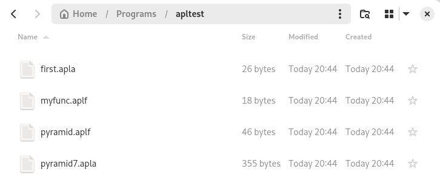
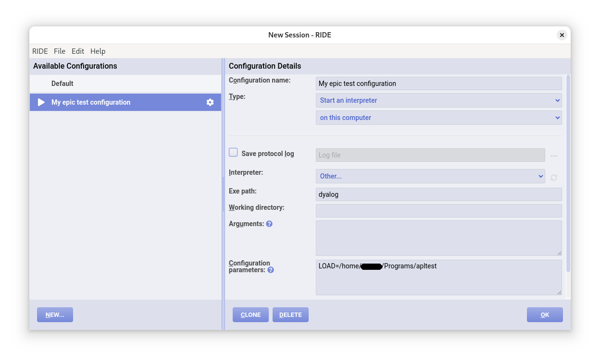

Development environment
This part will cover
- How to use Dyalog RIDE
- Workspace management
- Storing your code as text with Dyalog LINK
If everything has gone to plan, you should be able to write APL in the editor just like you did on TryAPL before this. This part is going to go through some tips and tricks and get you familiar with how real APL programmers do their thing.
Typing glyphs
The prefix method of typing glpyhs works just as before in RIDE.
Make sure to go to Edit > Preferences > Keyboard and change your keyboard layout and prefix key to the right settings.
The tab method doesn't work in RIDE, unless you installed a tab completion script as mentioned in Chapter 1.
However, the "bug" where you couldn't type certain prefix combinations is fixed as long as you set the right layout.
For example, on TryAPL, if you are using a Finnish keyboard, you can't type the ← symbol using the prefix method, since PREFIX ] does not work.
But in RIDE, the prefix is changed to PREFIX å, which works natively on your keyboard!
As before, you can hover over the buttons at the top to see the right key combination (and you can just click to insert the symbol).
Workspaces
The biggest benefit of using RIDE is that you can save and load your code. Imagine if you couldn't do this for bigger projects!
Dyalog stores APL code in APL workspaces. These are binary blobs of data containing all of your code, variables, values, and command history. Don't worry: we'll cover a way to save your code as plaintext later on.
Let's say you're just done with an intense APL coding session:
pyramid ← {⍵-∘.⌈⍨|⍵-⍳¯1+⍵×2}
pyramid
∇pyramid
pyramid 5
1 1 1 1 1 1 1 1 1
1 2 2 2 2 2 2 2 1
1 2 3 3 3 3 3 2 1
1 2 3 4 4 4 3 2 1
1 2 3 4 5 4 3 2 1
1 2 3 4 4 4 3 2 1
1 2 3 3 3 3 3 2 1
1 2 2 2 2 2 2 2 1
1 1 1 1 1 1 1 1 1
pyramid 3
1 1 1 1 1
1 2 2 2 1
1 2 3 2 1
1 2 2 2 1
1 1 1 1 1
pyramid7 ← pyramid 7
first ← pyramid7[1;]
first
1 1 1 1 1 1 1 1 1 1 1 1 1
myfunc ← {4/⍵}
myfunc 'meow'
mmmmeeeeoooowwww
Then, to save this as a workspace, you can use the )save filename command, replacing filename with the name of your project:
)save test
test.dws ⍝ saved Tue Jan 28 20:03:04 2025
Remember to save your workspaces
Sometimes, before exiting your session, RIDE will suggest to save your workspace; however, always remember to save your workspaces
Once you close and re-open RIDE, you can load your workspace by using the )load filename command:
)load test
./test.dws ⍝ saved Tue Jan 28 20:03:04 2025
System commands
The APL developers had to find a way to include useful commands in a way that they can't be confused for APL functions. The solution: no APL expression starts with a closing bracket, so let's use those for commands!
To see a full list of system commands, go to https://aplwiki.com/wiki/System_command.
There are some other useful system commands: )fns lists all functions, )vars lists all variables, )erase deletes a function or variable, )clear deletes everything, and )off closes RIDE.
)fns
myfunc pyramid
)vars
first pyramid7
)erase first
)vars
pyramid7
)erase myfunc
)fns
pyramid
)clear
clear ws
)vars
)fns
Saving your code as text
For many years, APL programmers relied on workspaces to write their APL code. If they needed to send code to a friend or coworker, they would just email the workspace file to them!
To us modern programmers, this is completely crazy, but some older APL programmers still swear by workspaces. The developers of APL eventually realised that workspaces on their own were a terrible idea: you couldn't use version control (for example, git), you couldn't manage projects with more than one person, and making small changes to any code required you to load the whole binary workspace blob with all of the variables and other history included.
To fix this, they created a user command called LINK!
User commands
System commands are functions that let you interact directly with the system. They are actually written in C under the hood. On the other hand, user commands are written in APL and let you do more involved actions. You can also overwrite or modify them if you're crazy enough.
All user commands start with a ], for the same reason that system commands start with a ).
To see a full list of system commands, run the help command ]?:
]?
───────────────────────────────────────────────────────────────────────────────
104 commands:
ARRAY Compare Edit
CALC Factors FromHex PivotTable ToHex
DEVOPS DBuild DTest GetTools4CITA
EXPERIMENTAL Get
FILE CD Collect Compare Edit Find Open Replace Split
ToLarge ToQuadTS Touch
FN Align Calls Compare Defs DInput Latest ReorderLocals
LINK Add Break Configure Create Export Expunge GetFileName
GetItemName Import Refresh Resync Status Stop Trace
NS ScriptUpdate Summary Xref
OUTPUT Box Boxing Disp Display Find Format HTML LastResult
Layout Plot Repr Rows View
PERFORMANCE Profile RunTime SpaceNeeded
SALT Boot Clean Compare List Load Refresh RemoveVersions
Save Set Settings Snap
TOOLS Activate ADoc APLCart Calendar Config Deactivate Demo
Help Version
TRANSFER In Out
UCMD UDebug ULoad UMonitor UNew UReset USetup UVersion
WS Check Compare Document FindRefs FnsLike Locate Map
Names NamesLike Nms ObsLike Peek SizeOf VarsLike
] ⍝ for general user command help
] -?? ⍝ for brief info on each command
]grp -? ⍝ for info on the "GRP" group
]grp.cmd -? ⍝ for info on the "Cmd" command of the "GRP" group
Let's use the ]LINK command to create a link between our workspace and a folder.
Let's see how to use it using the help command again:
]LINK -?
LINK User commands for namespace-directory synchronisation (see
https://dyalog.github.io/link ):
Add Associate items in linked namespaces with new files/directories
in corresponding directory, optionally with simultaneous
definition
Break Break link between namespace and corresponding directory
Configure Set directory or user configuration options
Create Link a namespace with a directory (create one but not both if
non-existent)
Export Export a namespace to a directory (create the directory if
absent); does not create a link
Expunge Erase item and associated file
GetFileName Return name of file associated with item
GetItemName Return name of item associated with file
Import Import a namespace from a directory (create the namespace if
absent); does not create a link
Refresh Manually synchronise namespace or directory contents
Resync Automatically synchronise namespace-directory differences
Status List active namespace-directory links
Stop Set, clear or report on breakpoints
Trace Set, clear or report on lines traced
] ⍝ for general user command help
]grp -? ⍝ for info on the "GRP" group
]grp.cmd -? ⍝ for info on the "Cmd" command of the "GRP" group
And again for the Create subcommand:
]LINK.Create -?
───────────────────────────────────────────────────────────────────────────────
]LINK.Create
Link a namespace with a directory (create one but not both if non-existent)
]LINK.Create [<ns>] <dir> [-source={ns|dir|auto}]
[-watch={none|ns|dir|both}] [-casecode] [-forceextensions]
[-forcefilenames] [-arrays{=name1,name2,...}] [-sysvars] [-flatten]
[-beforeread=<fn>] [-beforewrite=<fn>] [-getfilename=<fn>]
[-codeextensions=<var>] [-typeextensions=<var>] [-fastload] [-ignoreconfig]
[-text={aplan|plain}]
]LINK.Create -?? ⍝ for argument and modifier details
]FILE.Open https://dyalog.github.io/link/4.0/API/Link.Create
Ok, enough documentation. Time to create the link!
]LINK.Create takes two arguments: the namespace you are using and the path on your computer you want to link the workspace to.
In most cases, you should just put # for the namespace, which just means "everything".
Namespaces are a way to organise code within one workspace, more on Object-oriented APL later in this chapter.
All you have to do now is to create a new (empty) folder somewhere on your computer, and pass its path to the link command.
For example, I have created a new folder called apltest in the Programs folder, so I'll run this:
]Link.Create # Programs/apltest
Linked: # ←→ ~/Programs/apltest
The bi-directional arrow means changes to our code in our namespace # are written to our folder, and changes to our code in the folder is reflected back to our namespace! On some systems, only a uni-directional arrow is shown. If this is the case, you might need to install the .NET Framework from Microsoft, but a uni-directional link is sufficient for our purposes.
Let's see what happens when we create the same functions and variables as in the previous example.
pyramid ← {⍵-∘.⌈⍨|⍵-⍳¯1+⍵×2}
pyramid7 ← pyramid 7
first ← pyramid7[1;]
myfunc ← {4/⍵}
Nothing special happens for now. This is because LINK only cares about automatically saving "real" functions, which we'll get to in the next part. For now, though, we can manually add our dfns and variables to the link:
]Link.add myfunc
Added: #.myfunc
]Link.add pyramid
Added: #.pyramid
]Link.add pyramid7
Added: #.pyramid7
]Link.add first
Added: #.first
Open the folder you created, and voilà: your code has been saved!

Filetypes
LINK will save your code using different extensions depending on the type:
.aplffor functions.aplafor arrays.aplnfor namespaces
Now, you no longer have to use the )save or )load command to store workspaces: all you have to do is use LINK!
Actually, if you're using LINK, don't use the )save and )load commands. Strage things will happen if you do...
Loading your code from a linked folder
Let's say you've closed and re-opened RIDE again. How do you get back your saved code? There are two options: the first is clunky and manual, and the second is smooth and automatic.
The clunky and manual option
This is pretty straightforward: just run the ]LINK command again.
)fns
)vars
]Link.Create # Programs/apltest
Linked: # → ~/Programs/apltest
)fns
myfunc pyramid
)vars
first pyramid7
LINK will just load all of the files stored in your folder and put them back in your fresh workspace. The only problem is that you'll have to run this command every time you re-open RIDE, which might get a little annoying.
The smooth and automatic version
It's time to put the little pop-up menu that opens every time you boot RIDE to good use.
Close and re-open RIDE or (if that doesn't work) click on File > New Session in the top-left corner.
Then, click on New..., choose a name, and change Connect to an interpreter to Start an interpreter.
After this you should be able to see a text box that says Exe path and Configuration parameters.
- Put
dyalogunderExe path - Put
LOAD=your_path_hereunderConfiguration parameters- The path must be the full path or RIDE won't recognise it
- For example, on Linux, my path is
/home/username/Programs/apltest - On Windows, this could be
C:\Users\username\Programs\apltest
If you did everything correctly, the screen should look something like this:

Press the "Run" triangle and the link should load automatically!
Scary red text
Don't worry if RIDE tells you VALUE ERROR: Undefined name: Run in scary red text.
Every time the automatic link system executes, it tries to run a function called Run if you've created one.
If you haven't, nothing bad will happen, but you will see this red text.